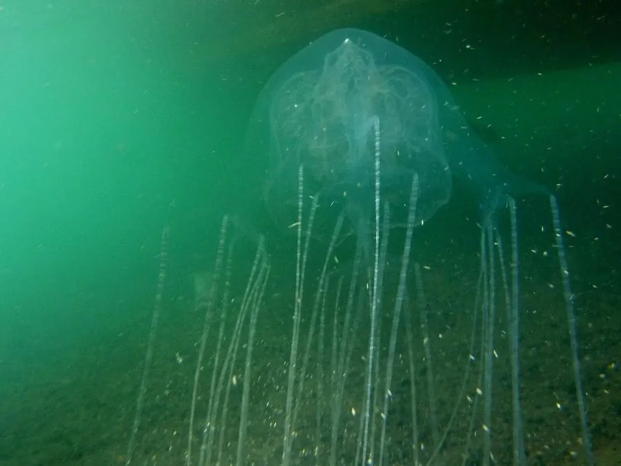

其他无脊椎动物 · 动物界
澳大利亚箱形水母 Chironex fleckeri

世界上最毒的海洋动物之一，伞体呈方形，触手布满刺细胞，分布在澳大利亚北部海域，蜇伤可致命。
- 分类
- 门刺胞动物门纲立方水母纲目箱形水母目科箱水母科属箱水母属
- 栖息环境
- 澳大利亚北部和东南亚的浅海海岸，涨潮时靠近沙滩
- 地理分布
- 澳大利亚北部海域、新几内亚和东南亚部分海域
- 保护级别
- 暂无评估
物种志
澳大利亚箱形水母的伞体呈立方形，半透明，直径约 15–25 cm，伞体四角各伸出成束的触手，每条触手可长达 3 m，上面密布刺细胞。它有 24 只眼睛，其中一些具备成像能力，能主动游动和避开障碍。
它生活在澳大利亚北部和东南亚部分海域的浅水海岸，常在涨潮时靠近沙滩，游泳速度快，能主动捕食小鱼和虾类。箱形水母的毒液毒性极强，蜇伤后可在数分钟内引起剧痛、呼吸困难甚至心跳骤停，是世界上最危险的海洋动物之一。澳大利亚海滩在箱形水母季节会设置防护网并张贴警示，被蜇后应立即呼救并进行急救处理。在箱形水母季节，应避免在无人看管的海滩下水。
形态与习性
- 食性捕食小鱼和虾类
- 伞体立方形，直径约 15–25 cm
- 触手四条成束触手，每条可长达 3 m
- 眼睛有 24 只眼睛，能主动避开障碍
- 毒性毒液极强，蜇伤可致命
- 分布澳大利亚北部和东南亚浅海
趣味知识
- 澳大利亚箱形水母的伞体是方形的，和常见的水母很不一样。
- 它的毒液可让人在几分钟内出现生命危险，是世界上最毒的海洋动物之一。
- 澳大利亚部分海滩在箱形水母季节会设防护网并发布警示。